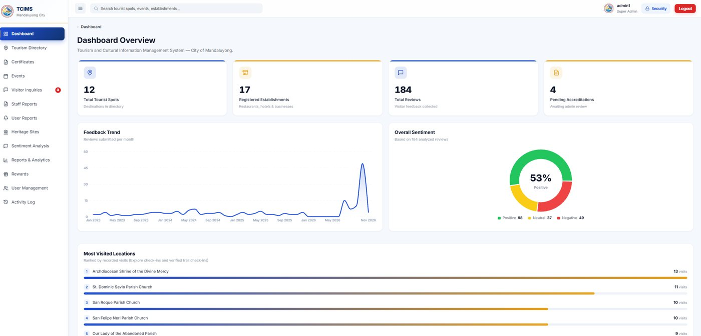

01
TCIMS Mandaluyong capstone
Tourism and Cultural Information Management System with Sentiment Analysis, built for the City Culture, Arts and Tourism (CCAT) Office of Mandaluyong City. I led the four-person team as Project Manager and worked as Full-Stack Web Developer.

View case study ›
Problem
The CCAT office needed one platform for city tourism staff, tourists, and accredited establishments, with trustworthy visitor feedback and a proper accreditation process.
Approach
- Agreed the scope with the CCAT office and split work across web, mobile, and analytics tracks
- Built a role-based React 19 + Vite platform over a PHP and MySQL REST API
- Built a Taglish sentiment engine: an English–Filipino lexicon plus a Multinomial Naive Bayes classifier over character n-grams
- Added GPS-verified check-in (haversine, 250 m radius) so only on-site visitors can review
- Designed the accreditation workflow: document review, return-for-revision emails, two-year certificates and renewal
Result
The sentiment engine reached 92.77% agreement with manually labelled reviews. The system went through three panel defences and is deployed on Vercel and Render (Dockerised PHP) with a TiDB Cloud database and Brevo email. See it live.